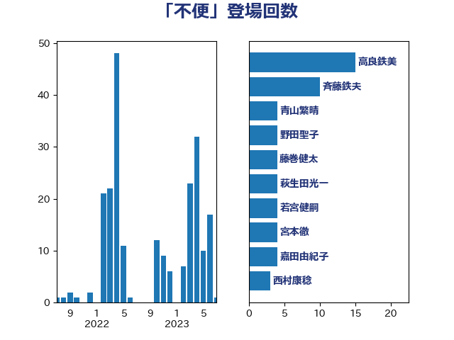

単語「不便」

| 高良鉄美 | 無所属 | 15 回 |
| 斉藤鉄夫 | 公明党 | 10 回 |
| 青山繁晴 | 自由民主党 | 4 回 |
| 野田聖子 | 自由民主党 | 4 回 |
| 藤巻健太 | 日本維新の会 | 4 回 |
| 萩生田光一 | 自由民主党 | 4 回 |
| 若宮健嗣 | 自由民主党 | 4 回 |
| 宮本徹 | 日本共産党 | 4 回 |
| 嘉田由紀子 | 無所属 | 4 回 |
| 西村康稔 | 自由民主党 | 3 回 |
| 福島みずほ | 社会民主党 | 3 回 |
| 石井苗子 | 日本維新の会 | 3 回 |
| 猪瀬直樹 | 日本維新の会 | 3 回 |
| 湯原俊二 | 立憲民主党 | 3 回 |
| 浜田聡 | NHK党 | 3 回 |
| 岸田文雄 | 自由民主党 | 3 回 |
| 小野田紀美 | 自由民主党 | 3 回 |
| 井原巧 | 自由民主党 | 3 回 |
| 高橋千鶴子 | 日本共産党 | 2 回 |
| 谷川とむ | 自由民主党 | 2 回 |
| 神谷裕 | 立憲民主党 | 2 回 |
| 田村智子 | 日本共産党 | 2 回 |
| 浅野哲 | 国民民主党 | 2 回 |
| 河野太郎 | 自由民主党 | 2 回 |
| 梅村聡 | 日本維新の会 | 2 回 |
| 柳ヶ瀬裕文 | 日本維新の会 | 2 回 |
| 杉尾秀哉 | 立憲民主党 | 2 回 |
| 岬麻紀 | 日本維新の会 | 2 回 |
| 岩谷良平 | 日本維新の会 | 2 回 |
| 岡本あき子 | 立憲民主党 | 2 回 |
| 坂本祐之輔 | 立憲民主党 | 2 回 |
| 古川元久 | 国民民主党 | 2 回 |
| 加藤勝信 | 自由民主党 | 2 回 |
| 齋藤健 | 自由民主党 | 1 回 |
| 階猛 | 立憲民主党 | 1 回 |
| 長峯誠 | 自由民主党 | 1 回 |
| 長妻昭 | 立憲民主党 | 1 回 |
| 鈴木庸介 | 立憲民主党 | 1 回 |
| 金城泰邦 | 公明党 | 1 回 |
| 重徳和彦 | 立憲民主党 | 1 回 |
| 赤澤亮正 | 自由民主党 | 1 回 |
| 舩後靖彦 | れいわ新選組 | 1 回 |
| 臼井正一 | 自由民主党 | 1 回 |
| 美延映夫 | 日本維新の会 | 1 回 |
| 竹谷とし子 | 公明党 | 1 回 |
| 福重隆浩 | 公明党 | 1 回 |
| 石橋林太郎 | 自由民主党 | 1 回 |
| 石原正敬 | 自由民主党 | 1 回 |
| 猪口邦子 | 自由民主党 | 1 回 |
| 渡辺創 | 立憲民主党 | 1 回 |
| 深澤陽一 | 自由民主党 | 1 回 |
| 浜口誠 | 国民民主党 | 1 回 |
| 津島淳 | 自由民主党 | 1 回 |
| 永岡桂子 | 自由民主党 | 1 回 |
| 櫻井周 | 立憲民主党 | 1 回 |
| 林芳正 | 自由民主党 | 1 回 |
| 杉久武 | 公明党 | 1 回 |
| 本庄知史 | 立憲民主党 | 1 回 |
| 木村英子 | れいわ新選組 | 1 回 |
| 早坂敦 | 日本維新の会 | 1 回 |
| 新妻秀規 | 公明党 | 1 回 |
| 斎藤アレックス | 国民民主党 | 1 回 |
| 川崎ひでと | 自由民主党 | 1 回 |
| 岸真紀子 | 立憲民主党 | 1 回 |
| 山添拓 | 日本共産党 | 1 回 |
| 山崎誠 | 立憲民主党 | 1 回 |
| 山岸一生 | 立憲民主党 | 1 回 |
| 山下芳生 | 日本共産党 | 1 回 |
| 小野泰輔 | 日本維新の会 | 1 回 |
| 小沼巧 | 立憲民主党 | 1 回 |
| 小沢雅仁 | 立憲民主党 | 1 回 |
| 小川淳也 | 立憲民主党 | 1 回 |
| 宮本岳志 | 日本共産党 | 1 回 |
| 安江伸夫 | 公明党 | 1 回 |
| 太田房江 | 自由民主党 | 1 回 |
| 大西健介 | 立憲民主党 | 1 回 |
| 大口善徳 | 公明党 | 1 回 |
| 堀場幸子 | 日本維新の会 | 1 回 |
| 國重徹 | 公明党 | 1 回 |
| 和田有一朗 | 日本維新の会 | 1 回 |
| 吉井章 | 自由民主党 | 1 回 |
| 古賀之士 | 立憲民主党 | 1 回 |
| 古川禎久 | 自由民主党 | 1 回 |
| 加田裕之 | 自由民主党 | 1 回 |
| 佐々木さやか | 公明党 | 1 回 |
| 住吉寛紀 | 日本維新の会 | 1 回 |
| 伴野豊 | 立憲民主党 | 1 回 |
| 伊藤渉 | 公明党 | 1 回 |
| 今井絵理子 | 自由民主党 | 1 回 |
| 仁木博文 | 無所属 | 1 回 |
| 井上哲士 | 日本共産党 | 1 回 |
| 三宅伸吾 | 自由民主党 | 1 回 |
| 三上えり | 立憲民主党 | 1 回 |
| おおつき紅葉 | 立憲民主党 | 1 回 |